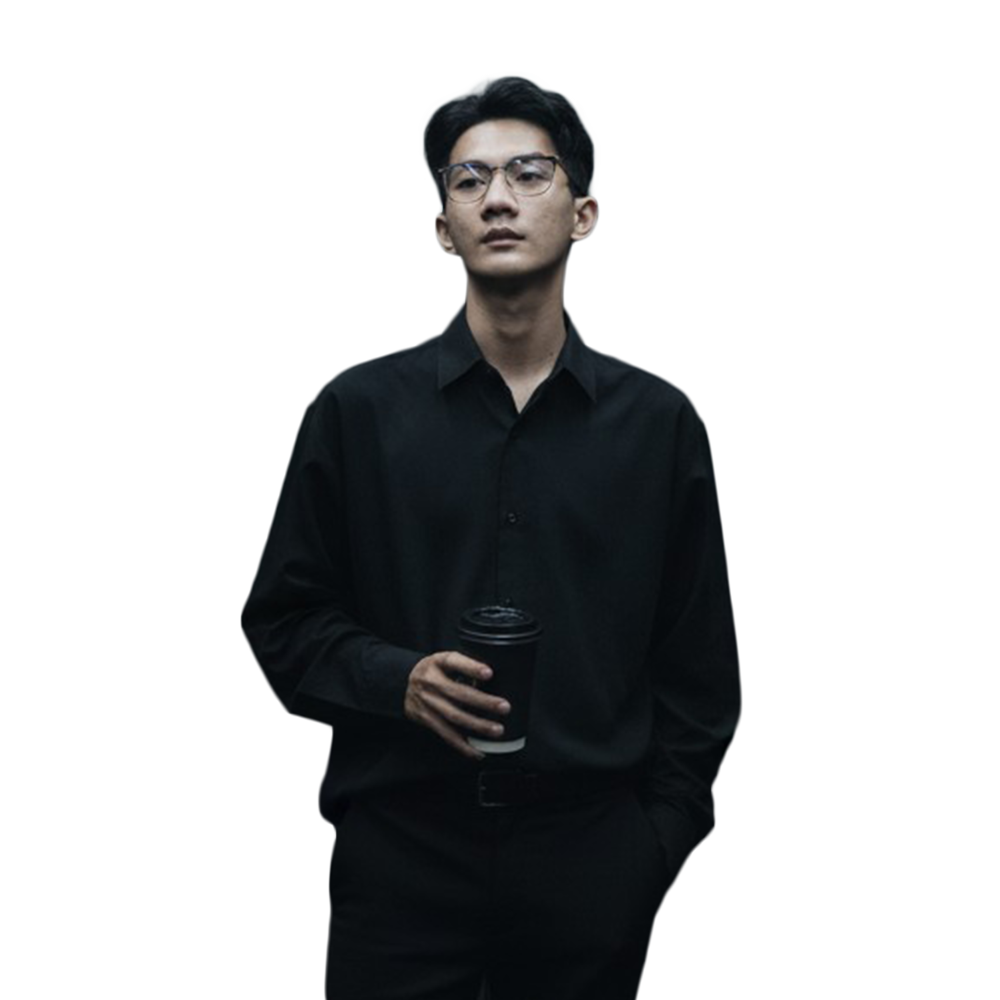

Portfolio & Journey
Zacky Muhammad Dinata
Junior Data Scientist & Blockchain Enthusiast | Passionate About Web3, Data, & Digital Art

About Me
Tentang Saya
Information Systems student at STMIK IKMI Cirebon passionate about Data Science, Web3, and Digital Art. Building skills in Python, SQL, and MySQL through comprehensive online courses from Fast Campus, CodingStudio, and other platforms. Since 2021, I've worked as a freelance NFT illustrator, completing 90+ artworks and various traits for global clients. My experience extends to the Web3 space, participating in testnet programs and early-stage campaigns to understand decentralized platforms and tokenomics firsthand. I am open to internships, freelance, and entry-level roles in data, design, or Web3.
Experience
Pengalaman
Junior Data Scientist (Career Transition)
Junior Data Scientist (Transisi Karir)
Jul 2025 - Present · Indonesia
Currently undergoing a planned career transition to deepen my knowledge in Data Science and Blockchain technology. Actively building skills in **Python, SQL, Excel, and MySQL** through structured academic studies and self-learning.
NFT & Design Artist
Seniman NFT & Desain
Freelance | Self-Employed · Dec 2021 - Present · Global (Remote)
Key Responsibilities:
- Designed original NFT characters and layered traits aligned with client concepts.
- Created diverse styles including vector, vexel, cartoon, and semi-realistic illustrations.
- Delivered generative-ready assets with optimized layering for NFT minting.
Key Achievements:
- Completed 60+ one-of-one NFT artworks for the FlokyApe collection.
- Designed 30+ layered trait items inspired by Azuki style.
- Delivered 20+ vector/vexel portraits for personal commissions.
Education
Pendidikan
STMIK IKMI Cirebon
Bachelor's degree, Information Systems · Oct 2024 - Oct 2028
Grade: **3.33** (Current GPA)
Activities: Active in academic learning, focusing on business innovation, data trends, and digital technology.
Skills
Keterampilan
Data Analysis & Programming
Analisis Data & Pemrograman
Python (Beginner), SQL, MySQL, Excel, Data Science Principles
Design & Illustration
Desain & Ilustrasi
Adobe Photoshop, Vector/Vexel Art, NFT Art, UI/UX (Basic Figma)
Web3 & Blockchain
Web3 & Blockchain
Tokenomics, NFT Deep Dive, Testnet Participation, Cryptocurrency Trading
Contact Me
Hubungi Saya
Feel free to reach out for collaborations, projects, or professional opportunities.